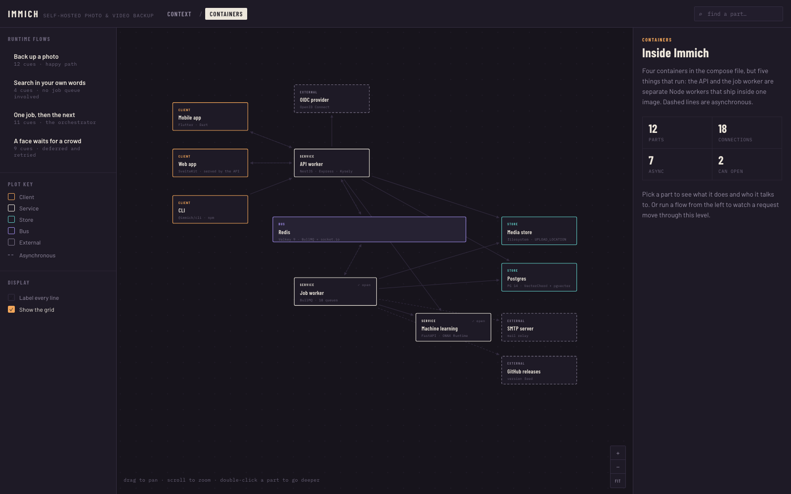

interactive C4 architecture diagrams
A Claude Code skill that reads a codebase and writes a single HTML file you can drill into. These are diagrams it produced, hosted so you can try them before installing anything.

Self-hosted photo and video backup. Pick a flow from the left rail to watch an upload move from the phone through the queue to a searchable embedding.